24 Vision-Language Multimodal Models
24.1 Modalities and the Vision-Language Setting
Modality: two data sources correspond to different modalities if the representation of at least one cannot be mapped unambiguously into the other — a pixel grid and a token sequence encode fundamentally different information and cannot be losslessly converted into each other.
Vision-Language (VL) modeling learns statistical patterns relating image and text data. Modern VL models are pre-trained on large image-text datasets via a general pretext task, then adapted to downstream tasks of interest via transfer learning or knowledge distillation.
24.1.1 Core Tasks
| Task | Input | Output |
|---|---|---|
| Text-to-Image Retrieval | Text query, image database | Best-matching image |
| Image Captioning | Image | Natural-language description |
| Visual Question Answering (VQA) | Image, question | Answer |
| Grounding / Referring Expressions | Image, region description | Bounding box |
| Visual Dialog | Image, dialog history, question | Answer to the last question |
| Image Generation | Text description | Image |
24.1.2 Task Examples
The same generic architecture — a visual encoder \(h(\cdot)\), a language encoder \(g(\cdot)\), and a combination function \(f(\cdot)\) — instantiates each task below by varying the inputs and output of \(f(\cdot)\).
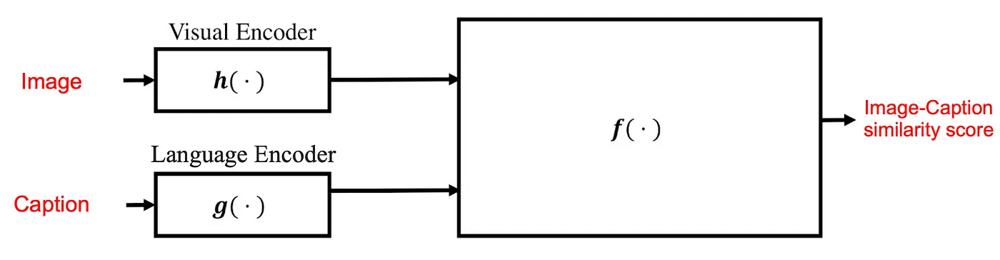
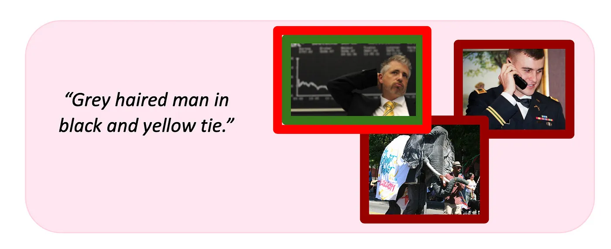
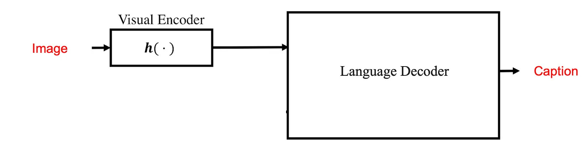
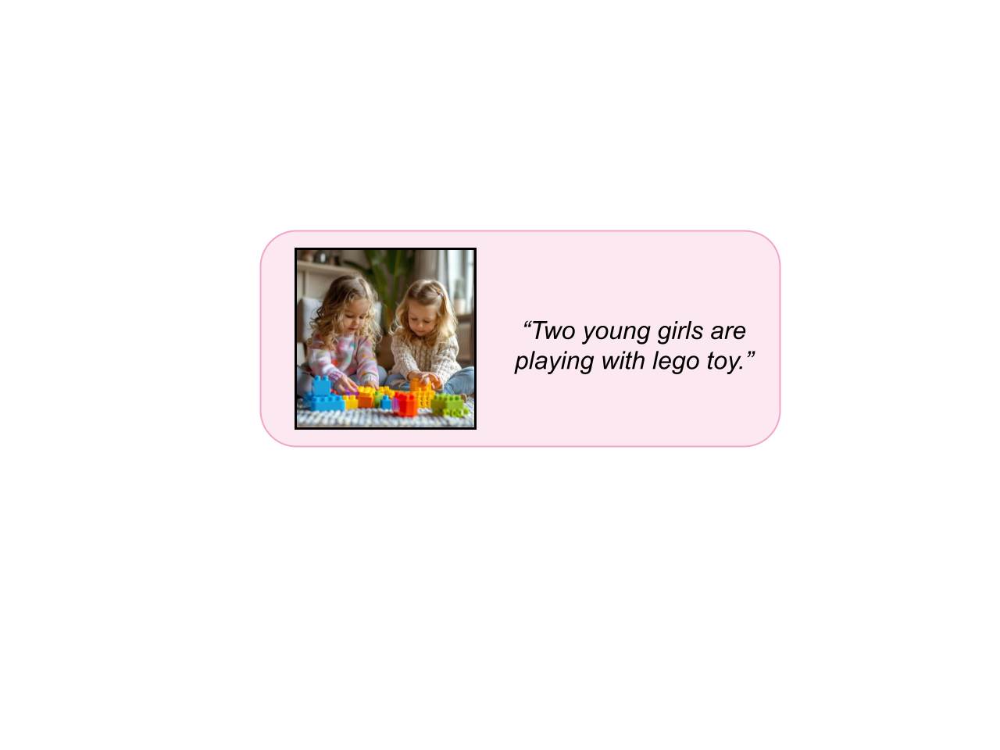
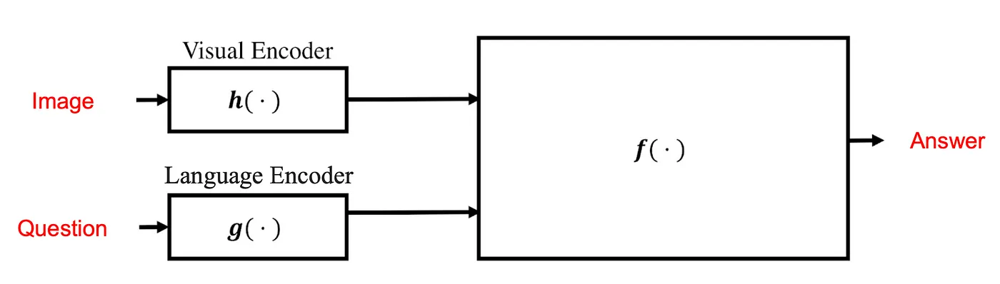
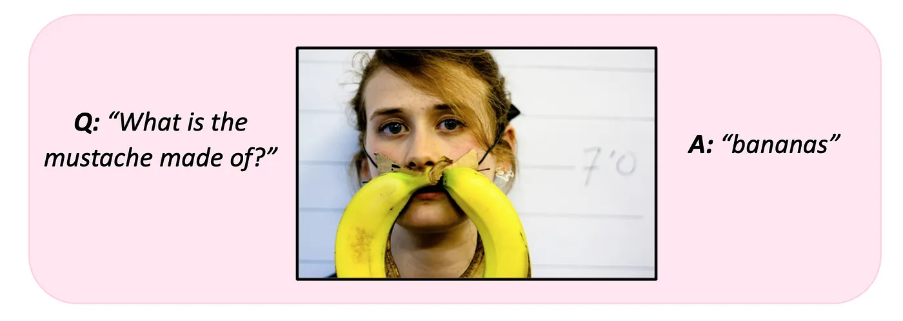
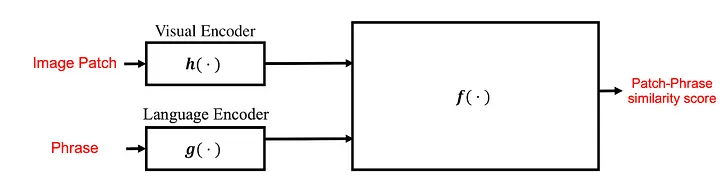
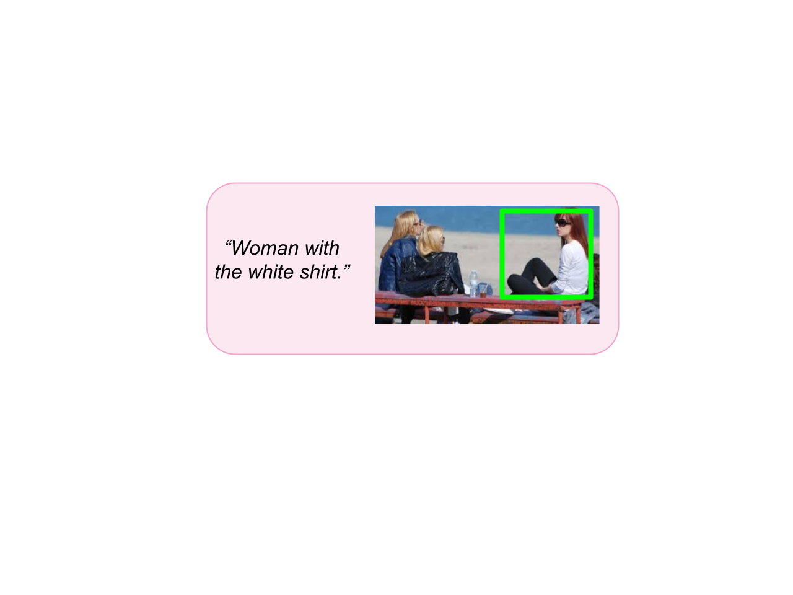
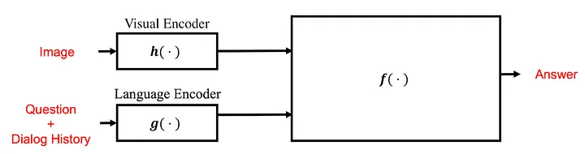
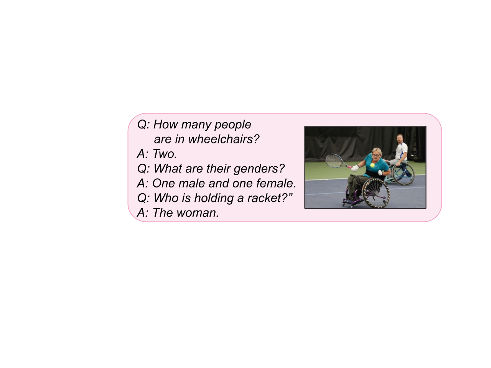
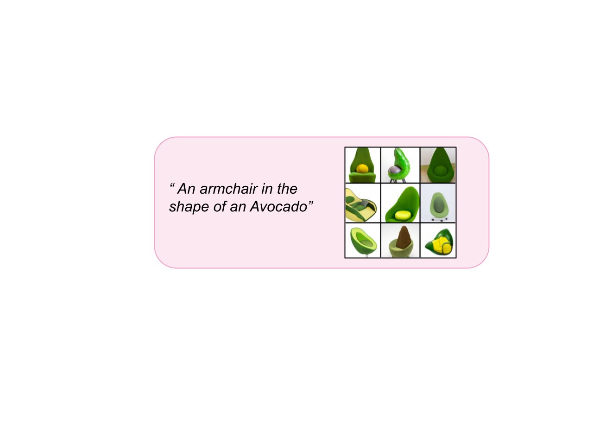
24.2 Pre-Training
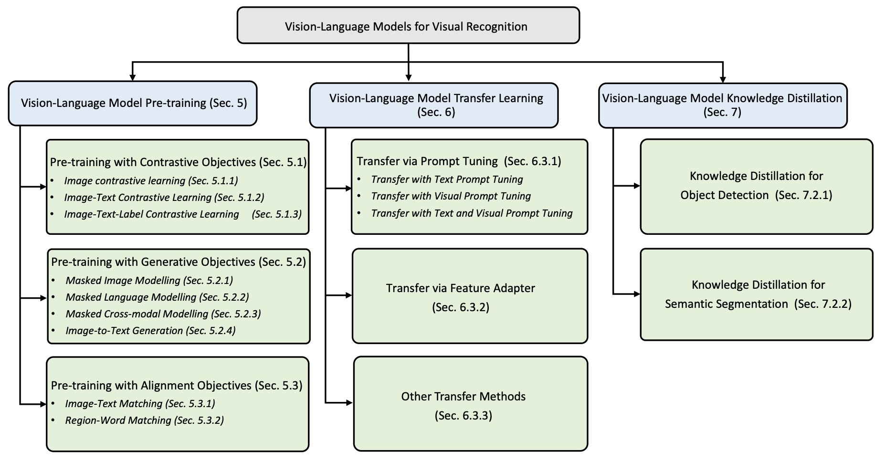
Two challenges dominate VL pre-training:
- Data Alignment: learning the semantic correspondence between the two modalities.
- Complexity: the computational cost of training and serving a large multimodal model.
VL models differ primarily along two axes: architecture (how the modalities are fused) and pre-training objective (what signal drives the alignment).
24.2.1 Architecture: Modality Fusion
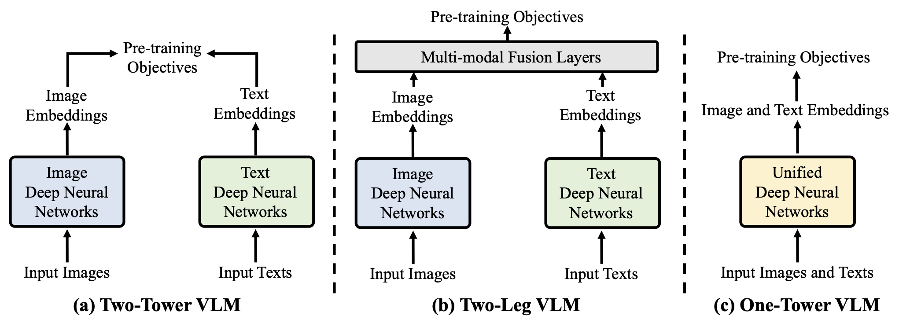
| Fusion | Description | Examples |
|---|---|---|
| Late Fusion (Two-Tower) | Two independent encoders process each modality separately; outputs combined only via a similarity score (e.g. dot product) | CLIP, ALIGN |
| Intermediate Fusion (Two-Leg / Cross-Attention) | Two separate networks, connected by cross-attention layers between modalities | Flamingo, BLIP-2 |
| Early Fusion (Single-Tower / Self-Attention) | A single encoder embeds both modalities into a shared token sequence, processed by joint self-attention | BEiT-3, VisualBERT |
Interview Insight: “Which fusion strategy for retrieval vs. reasoning?” Late fusion is the only architecture that scales to retrieval over millions of images — embeddings are pre-computed once and compared via a single dot product at query time. Early and intermediate fusion enable much richer cross-modal reasoning (needed for VQA, captioning, grounding) but require a full forward pass through the joint model for every query, making them unsuitable for large-scale retrieval.
24.2.2 Pre-Training Objectives
- Contrastive Learning: distinguish a matched (image, caption) pair from mismatched pairs.
- Masked Token Learning: predict masked input tokens (image patches and/or text tokens) from the unmasked context.
- Generative Learning: autoregressive next-token prediction on the language output, conditioned on the image via cross-attention.
24.3 Models
24.3.1 A. Contrastive Learning Objective
24.3.1.1 CLIP / ALIGN (2021)
Architecture: dual encoder — a Transformer text encoder and a ResNet or ViT image encoder, projecting both modalities into a shared embedding space.
Training: given a batch of \(N\) (image, caption) pairs, encode each into normalized embeddings \(\mathbf{v}_i, \mathbf{t}_i\) and minimize the symmetric InfoNCE loss over the \(N \times N\) similarity matrix \(S_{ij} = \mathbf{v}_i^\top \mathbf{t}_j / \tau\): \[\boxed{\mathcal{L}_{\text{CLIP}} = \frac{1}{2N}\sum_{i=1}^N \left[-\log\frac{\exp(S_{ii})}{\sum_{j=1}^N \exp(S_{ij})} -\log\frac{\exp(S_{ii})}{\sum_{j=1}^N \exp(S_{ji})}\right]}\] where \(\tau\) is a learnable temperature. The two terms are the image→text and text→image classification losses: each image must pick out its matching caption among the \(N\) in the batch, and vice versa.
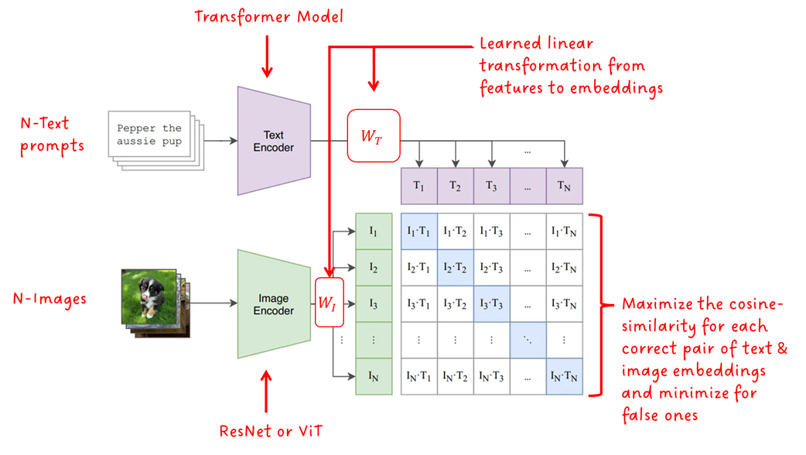
Inference: for zero-shot classification, encode each class label as a text prompt (e.g. “a photo of a {class}”) and assign the image to the class whose text embedding has the highest cosine similarity with the image embedding.
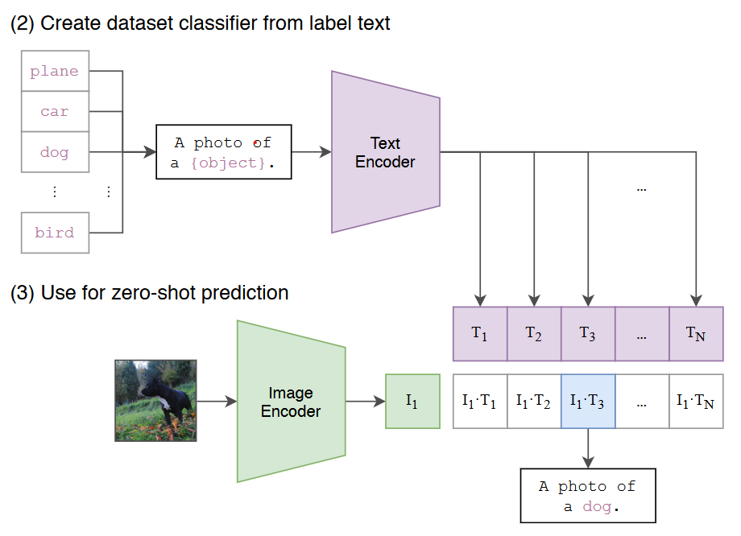
Scaling: data size, batch size, and model size all improve accuracy — larger batches give a harder contrastive task (more negatives per positive), which is one reason CLIP-style training benefits disproportionately from scale.
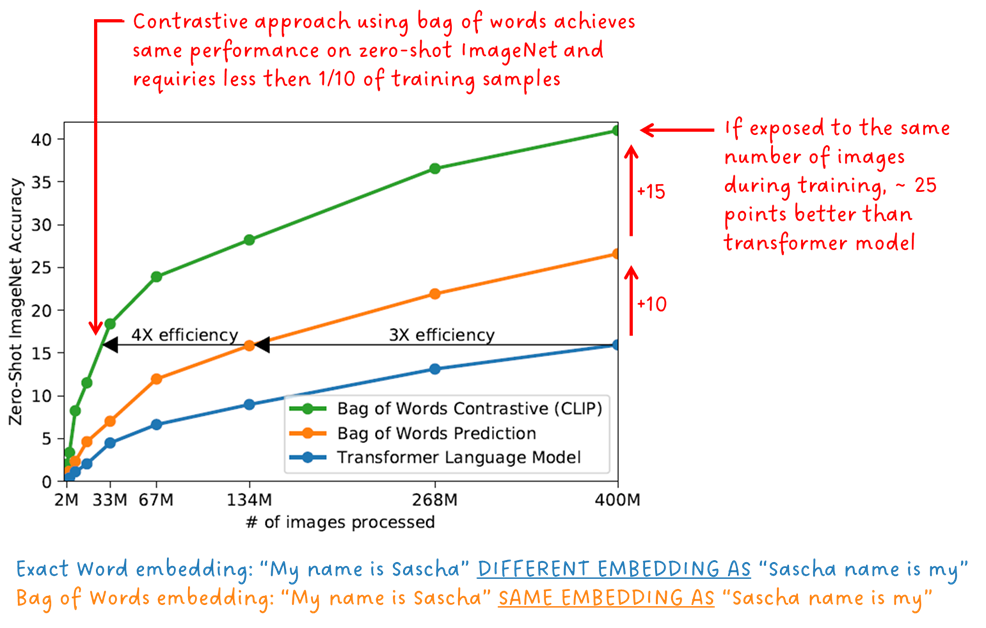
Interview Insight: “Why does CLIP need such large batch sizes?” Every other sample in the batch serves as a negative for the contrastive loss. Small batches give few, easy negatives — the model can satisfy the loss without learning fine-grained distinctions. Large batches (32k+ in the original CLIP) make the discrimination task hard enough to drive useful representation learning.
24.3.1.2 Improvements Combining CLIP with Other Objectives
- FLIP (2022): randomly drops a large fraction of image patches before encoding, reducing compute and acting as data augmentation — the efficiency gains can be reinvested as accuracy gains at a fixed compute budget.
- CoCa (2022): trains a single model with both a contrastive loss (image-text matching) and a captioning (generative) loss, unifying the two paradigms.
- Florence (2021): a unified image representation pre-trained with a contrastive objective, transferable across classification, retrieval, detection, and captioning.
- DeCLIP (2022): supplements the contrastive signal with self-supervision (image-image, text-text) and nearest-neighbor supervision, improving data efficiency.
- FILIP (2021) — fine-grained alignment between image patches and text tokens. Given \(N\) image patch embeddings \(\{\mathbf{v}_k\}\) and \(M\) text token embeddings \(\{\mathbf{t}_r\}\), the image-text similarity is the average, over image patches, of the maximum similarity to any text token: \[\text{sim}(\mathbf{V}, \mathbf{T}) = \frac{1}{N}\sum_{k=1}^N \max_{r=1,\ldots,M} \mathbf{v}_k^\top \mathbf{t}_r\] This token-level max-similarity replaces the single global cosine similarity in the InfoNCE loss, giving a much finer-grained training signal than CLIP’s pooled embeddings.
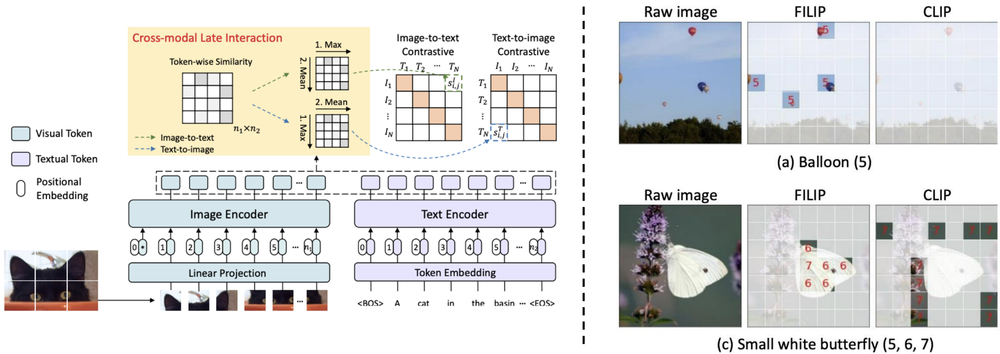
24.3.1.3 SigLIP (Sigmoid Loss for Language-Image Pre-training, 2023)
SigLIP keeps CLIP’s dual-encoder architecture but replaces the softmax-based InfoNCE loss with a pairwise sigmoid loss. Each (image, text) pair in the batch is treated as an independent binary classification — match or non-match — rather than a multi-way classification over the batch: \[\boxed{\mathcal{L}_{\text{SigLIP}} = -\frac{1}{N}\sum_{i=1}^N\sum_{j=1}^N \log\sigma\!\left(z_{ij}\,(t\,\mathbf{v}_i^\top\mathbf{t}_j + b)\right)}, \qquad z_{ij} = \begin{cases} +1 & i = j \\ -1 & i \neq j \end{cases}\] where \(t\) is a learnable temperature, \(b\) a learnable bias, and \(\sigma\) the sigmoid function.
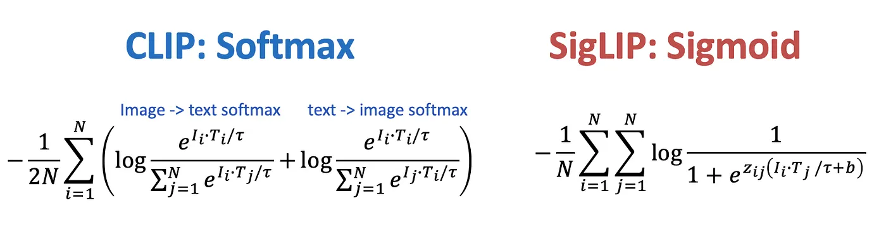
Why it matters:
- SigLIP outperforms CLIP at small batch sizes — the per-pair loss doesn’t degrade when there are fewer negatives.
- SigLIP is more memory-efficient at very large batch sizes, because the sigmoid loss decomposes over individual \((i,j)\) pairs — no global softmax normalization (and the associated cross-device all-gather of the full similarity matrix) is required.
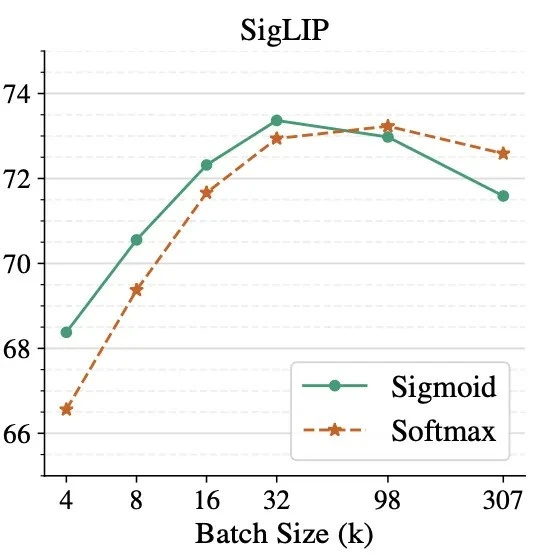
24.3.1.4 SigLIP2 (2025)
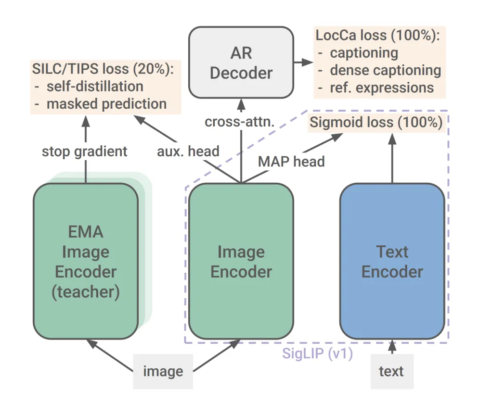
SigLIP2 combines SigLIP’s sigmoid image-text matching objective with auxiliary self-supervised losses that improve un-pooled (per-patch) image features:
| Auxiliary Objective | Type of Loss | Primary Benefit |
|---|---|---|
| Captioning-based Pretraining (LocCa) | Image-to-Text, Region-to-Text | Localization — image captioning, referring expression prediction, and grounded captioning force the vision encoder to be location-aware |
| Self-Distillation (Global-Local) | Self-Supervised | Dense feature semantics — a student matches a teacher’s full-image representation from local crops, encouraging consistent local-to-global features |
| Masked Prediction | Self-Supervised | Richer per-patch representations — the student predicts teacher features of masked patches |
24.3.2 B. Masked Token Learning Objective
24.3.2.1 BEiT / BEiT-2 / BEiT-3 (2021–2023)
Pre-training task: BEiT-3 extends BERT-style masked modeling to image tokens, text tokens, and image-text pairs in a unified manner — randomly masking 15% of tokens in unimodal text, 50% of tokens in text paired with images, and 40% of image patches (block-wise masking, as in BEiT).
Model: a Multiway Transformer — shared self-attention modules followed by three modality-specific feed-forward “experts” (vision, language, vision-language), allowing a single backbone to specialize per modality while sharing the attention computation.
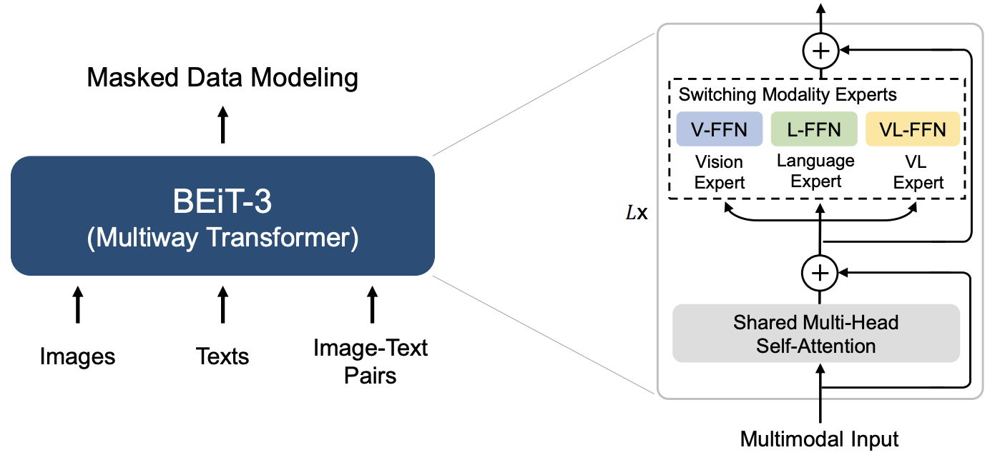
Data: ~21M image-text pairs for multimodal pre-training, plus 14M unimodal images (ImageNet-21K) and 160GB of text corpora (Wikipedia, BookCorpus, OpenWebText, CC-News, Stories).
Advantage over contrastive pre-training: masked-token pre-training requires a much smaller batch size. BEiT-3 uses batches of 6,144 samples total (2,048 images + 2,048 texts + 2,048 image-text pairs) — orders of magnitude smaller than the 32k+ batches needed for contrastive learning, because the loss is computed per-token rather than relying on in-batch negatives.
24.3.3 C. Generative Objective and Large Multimodal Models (LMMs)
The generative objective is an autoregressive loss on the language output, with the image injected via cross-attention from text tokens to image features: \[\mathcal{L}_{\text{gen}} = -\sum_{l=1}^{L} \log p_\theta(y_l \mid y_{<l}, \mathbf{X}_{\text{img}})\]
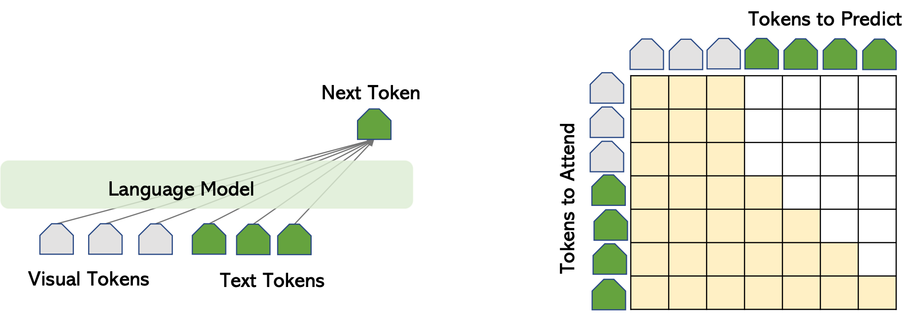
This objective underlies most modern Large Multimodal Models (LMMs), which connect a pre-trained vision encoder to a pre-trained (often frozen) LLM via a lightweight connection module.
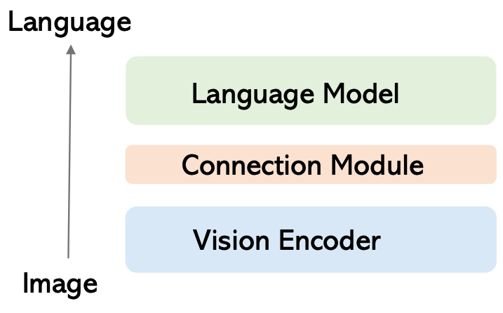
| GIT (2022) | BLIP-2 (2023) | Flamingo (2022) | |
|---|---|---|---|
| Language Model | From scratch | Frozen: FLAN-T5 / OPT | Frozen: 70B Chinchilla |
| Connection Module | — | Q-Former (trained) | Perceiver Resampler + gated cross-attention (trained) |
| Vision Encoder | Pre-trained: Florence/CLIP | Frozen: EVA/CLIP | Frozen: NFNet (CLIP-like) |
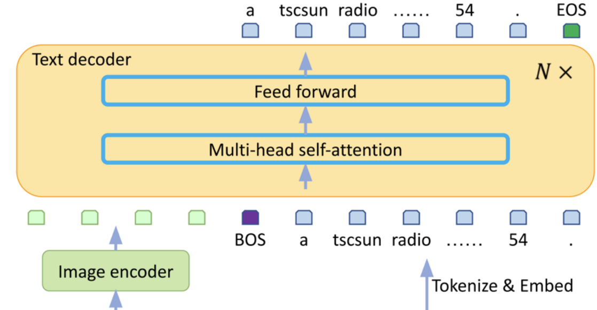
Q-Former (BLIP-2) — a trainable module connecting a frozen image encoder to a frozen LLM, itself composed of an image Transformer and a text Transformer sharing self-attention:
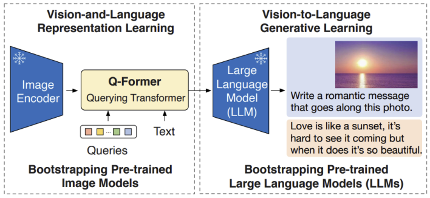
- The image Transformer takes a fixed number of learnable query tokens as input (à la DETR), which interact with frozen image features via cross-attention.
- Stage 1 (representation learning): jointly optimizes three losses — Image-Text Contrastive learning, Image-grounded Text Generation, and Image-Text Matching (binary classification with hard negatives).
- Stage 2 (generative pre-training): a linear projection maps the query embeddings into the LLM’s input embedding space; the projected queries are prepended to the text sequence as “soft visual prompts,” and the frozen LLM is trained to generate captions conditioned on them.
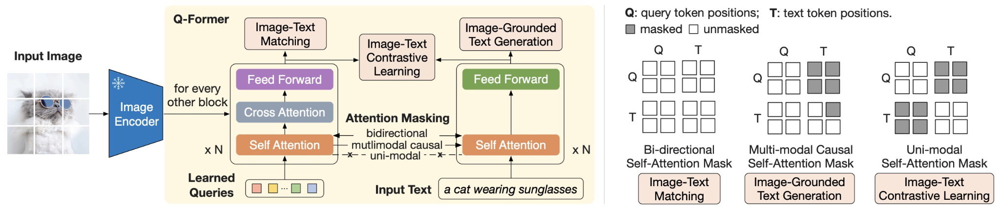
Perceiver Resampler (Flamingo) — converts a variable-length (and for video, spatiotemporal) sequence of vision-encoder features into a fixed small number of tokens (64), via cross-attention from a fixed set of learnable query tokens to the vision features — the same query-based compression idea as Q-Former and DETR.
Flamingo chains the Perceiver Resampler with newly-initialized, trainable gated cross-attention layers inserted between the frozen LLM’s self-attention blocks: \[\mathbf{h}' = \mathbf{h} + \tanh(\alpha)\cdot \text{CrossAttn}(\mathbf{Q}=\mathbf{h}, \mathbf{K}=\mathbf{V}=\mathbf{X}_{\text{img}})\] The gate \(\alpha\) is initialized to zero, so at initialization the block is the identity — the frozen LLM’s behavior is preserved until the cross-attention layers learn to use the visual input. Flamingo accepts an interleaved sequence of images and text and generates text.
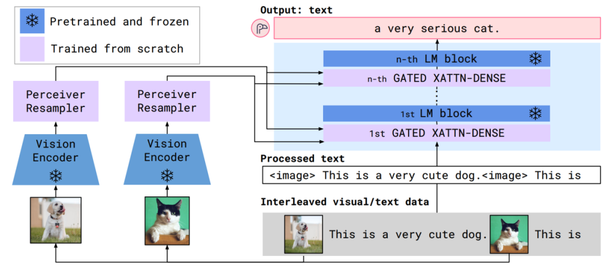
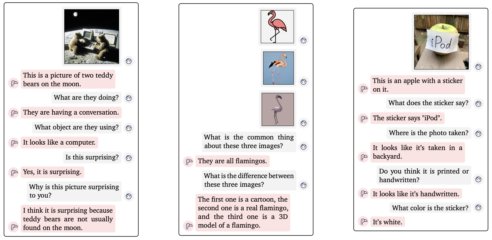
LLaVA (Large Language-and-Vision Assistant, 2023) — a single LLM consumes both text tokens and image tokens (projected into the language embedding space by a linear layer), with two-stage training:
- Stage 1 — Lightweight alignment: only the projection matrix is trained, on a subset of Conceptual Captions (CC3M).
- Stage 2 — Supervised fine-tuning (SFT): both the projection matrix and the LLM are updated on visual instruction data (multi-turn chat) and Science QA (multimodal reasoning).
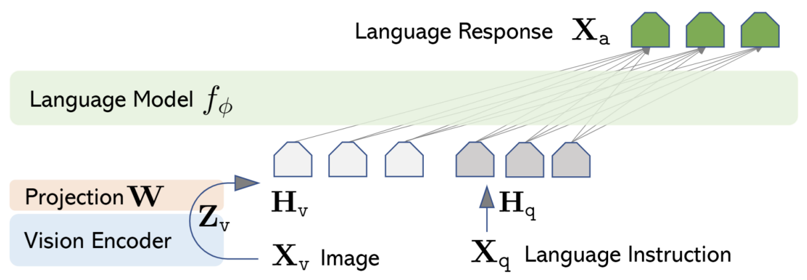
24.3.3.1 LMM Improvements
Architecture: LLM backbone size matters most for final performance. Vision encoder size matters less than its training data and representation quality — a CLIP-pretrained encoder is the strongest single choice, and mixing multiple vision encoders can further help.
Visual tokens — higher resolution matters:
- Multi-crop / dynamic high resolution: tile a high-resolution image into multiple fixed-size crops, each encoded independently, to support resolutions beyond the encoder’s native input size.
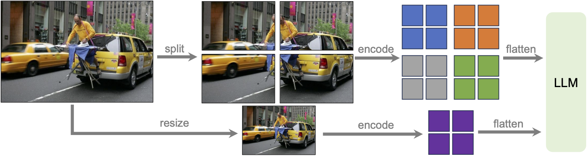
Figure 24.30: Dynamic high resolution: the input image is split into crops (and separately resized to a low-resolution overview), each encoded independently and flattened into the LLM’s input sequence. - Token reduction: with up to \(576 \times 5\) visual tokens for a multi-crop high-res image, strategies include adaptive sampling, nested/elastic token organization, and stacking tokens across layers (rather than only along the sequence at the input layer) to keep sequence length tractable.
Visual prompts: vision foundation models (Grounding DINO, SAM, SEEM) provide grounding signals, injected via two strategies:
- Feature-based: points, masks, boxes encoded and passed as additional tokens to the LLM.
- Pixel-based: points, masks, boxes overlaid directly on image pixels — simpler to implement and apply.
Training strategy: the best recipe is to fully fine-tune the model on high-quality “recap” data, after an initial projector-only warm-up followed by fine-tuning on general data.
Video: LLaVA-NeXT extends the dynamic-high-resolution mechanism (originally for high-resolution images) to handle multiple frames, trained with Direct Preference Optimization (DPO) on high-quality video data. At inference, relative positional embeddings across frames support longer videos than seen during training.
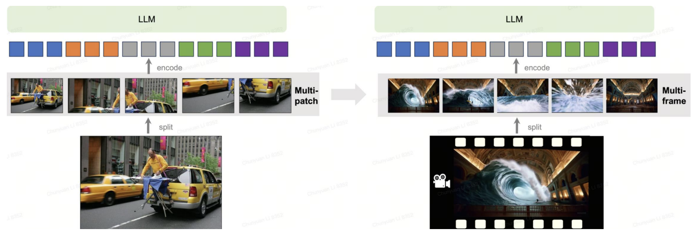
Figure 24.31: LLaVA-NeXT extends multi-patch processing for high-resolution images (left) to multi-frame processing for video (right), reusing the same split-encode-flatten pipeline across frames.
Emergent abilities: large VL models (e.g. Flamingo) display capabilities — implicit counting, arithmetic, celebrity recognition, OCR — that are emergent: absent in smaller models, present only once scale crosses some threshold, and not directly optimized for during pre-training.
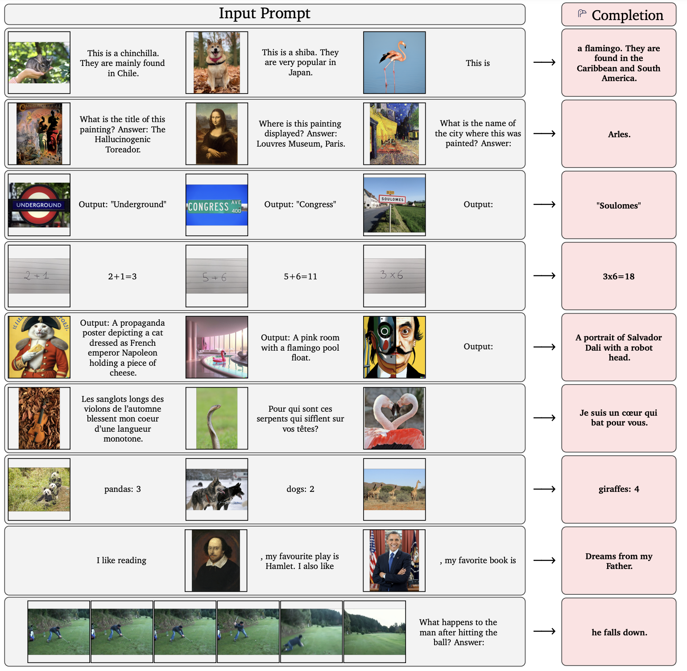
24.4 Transfer Learning
Pre-trained VL models often underperform on downstream tasks due to mismatches in data distribution (image and text statistics of the target task) and training objective (the pretext task differs from the downstream task). Four strategies adapt a pre-trained VL model:
| Strategy | Description |
|---|---|
| Prompt Tuning | Learn a continuous text prompt prepended to the input sequence, and/or a visual prompt added to the input image; the backbone is frozen |
| Feature Adaptation | Insert a small trainable network (e.g. a few linear layers, as in CLIP-Adapter) after the frozen encoders, trained with the task-specific loss |
| Fine-Tuning | Update the whole model (or a subset of layers) on task-specific data |
| Instruction Fine-Tuning | Fine-tune on machine-generated instruction-following data, improving zero-shot performance on novel instructions |
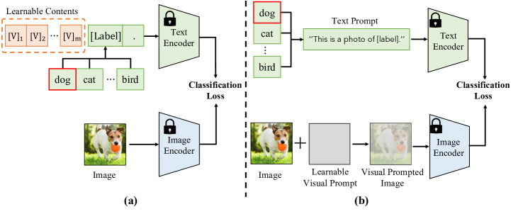
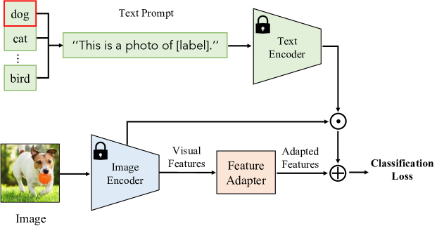
Instruction tuning for VL (LLaVA): for each MS-COCO (image, 5 captions) pair, a text-only GPT-4 generates instruction-following data from the captions alone — conversations, detailed descriptions, and complex-reasoning Q&A — without ever seeing the image. A pre-trained VL model is then fine-tuned on this synthetic (image, instruction, response) data.
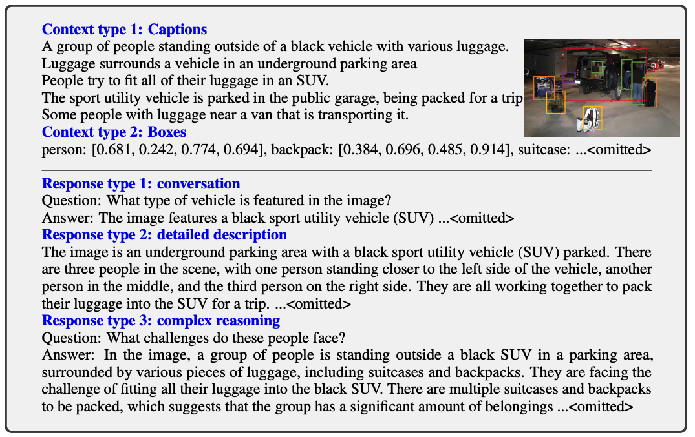
24.5 Knowledge Distillation
Transfer learning preserves the original model architecture; knowledge distillation instead transfers the learned representations of a large, generally pre-trained VL model into a task-specific architecture.
Example — object detection and semantic segmentation: region-level (Faster R-CNN, DETR) and pixel-level (segmentation) knowledge is distilled from the image-level representations of a generic pre-trained VL model (e.g. CLIP), bridging the gap between the VL model’s global image-text alignment and the dense, localized predictions required by detection/segmentation.
24.6 Datasets
| Dataset | Images | Captions per image |
|---|---|---|
| MS-COCO | 122K | 5 |
| Conceptual Captions | 3.3M | 1 |
| LAION-COCO | 600M | 1 |
| LAION-5B | 5.85B | 1 |
24.7 Vision Foundation Models: Unifying Vision Tasks
Language models unified many language tasks under a single architecture (decoder LLMs), and conversational LLMs (ChatGPT) enabled human-AI interaction. Vision tasks, by contrast, vary widely in input, output, and task granularity (image-level, region-level, pixel-level), making a single unifying architecture harder to design. Three lines of work address this:
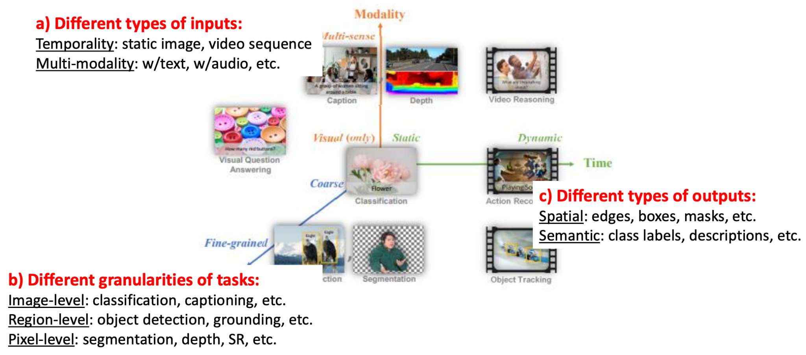
Free-text task unification (GroupViT, MaskCLIP, OpenSeg): replace fixed class label sets with free-text language, allowing a single model to handle arbitrary categories specified at inference time via text.
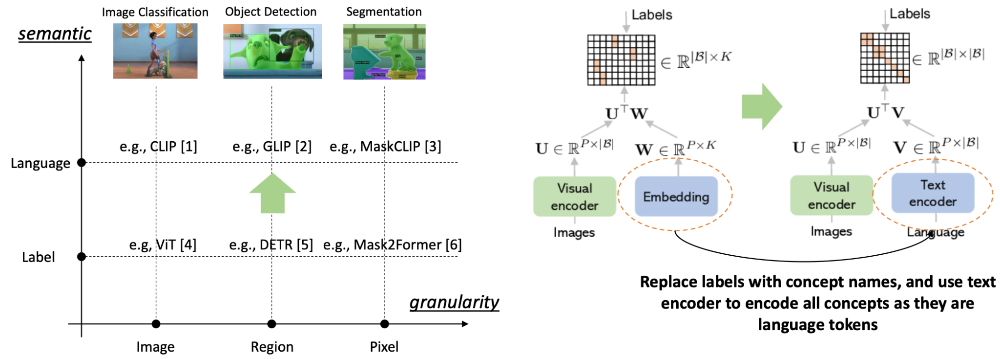
Figure 24.37: Replacing fixed class labels with a text encoder over concept names (“language”) unifies classification, detection, and segmentation models (CLIP, GLIP, MaskCLIP) with their label-based counterparts (ViT, DETR, Mask2Former) across the granularity axis. Output unification across granularities (UniTab, Pix2Seq v2, Unified-IO, UniPerceiver-v2, X-Decoder): represent diverse outputs (bounding boxes, masks, captions, labels) in a common sequence format, allowing one model/decoder to serve detection, segmentation, and captioning.
Human-AI interaction via prompting (SegGPT 2023, SAM 2023, SEEM 2024): text and visual prompts (points, boxes, scribbles) let a user interactively specify the segmentation/detection target at inference time.
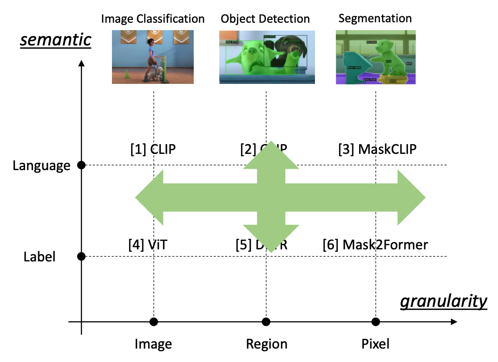
Figure 24.38: Prompting-based interaction lets a single model move flexibly along both the granularity axis (image/region/pixel) and the label-vs-language axis at inference time, rather than requiring a separately trained model for each combination.
24.8 Interview Questions
Q: Why does CLIP require very large batch sizes, and how does SigLIP address this?
CLIP’s InfoNCE loss treats every other image-text pair in the batch as a negative; small batches give few, easy negatives, so the contrastive task is too easy to drive fine-grained representation learning — accuracy scales strongly with batch size (32k+ in the original CLIP). SigLIP replaces the batch-wide softmax with a per-pair sigmoid loss, treating each (image, text) pair as an independent binary classification. This removes the dependence on a large pool of in-batch negatives (so SigLIP is competitive at small batch sizes) and avoids the cross-device communication needed to normalize a softmax over the full batch (so it’s more memory-efficient at very large batch sizes).
Q: Compare late, intermediate, and early fusion for vision-language models. When would you choose each?
Late fusion (CLIP, ALIGN) — two independent encoders combined only via a similarity score — is the only architecture that scales to retrieval over millions of images, since embeddings can be pre-computed offline. Early fusion (BEiT-3) — a single joint encoder over both modalities — gives the richest cross-modal interaction (best for VQA, reasoning) but every input pair requires a full joint forward pass, making it unsuitable for large-scale retrieval. Intermediate fusion (Flamingo, BLIP-2) — separate encoders connected by cross-attention — is a middle ground, commonly used in LMMs where a frozen LLM and frozen vision encoder are connected by a small trainable bridge.
Q: How do the Q-Former (BLIP-2) and Perceiver Resampler (Flamingo) compress visual information, and why is this compression necessary?
Both use a fixed, small set of learnable query tokens that cross-attend into the (potentially long) sequence of vision-encoder features, producing a fixed-size set of output tokens (e.g. 64 for Flamingo) regardless of input resolution or, for video, frame count. This compression is necessary because feeding raw per-patch (and per-frame) vision features directly into the LLM would make the input sequence prohibitively long — especially for high-resolution images or video, where the token count scales with \(H \times W\) (and \(\times T\)).
Q: Why does BEiT-3’s masked-modeling objective allow much smaller batch sizes than CLIP’s contrastive objective?
Contrastive losses derive their training signal from in-batch negatives — the loss is only meaningful with many negatives per positive, requiring large batches. Masked-token prediction derives its signal per-masked-token, from a cross-entropy loss against the ground-truth token/patch — each training example provides a dense, self-contained supervision signal independent of batch composition. BEiT-3 uses batches of ~6K total samples vs. 32k+ for CLIP-style training.
Q: What does it mean for an ability to be “emergent” in large VL models? Give an example.
An ability is emergent if it is absent (near chance performance) in smaller models but appears once model/data scale crosses some threshold — and was not an explicit training objective. Flamingo exhibits emergent few-shot abilities like implicit counting, arithmetic from images, celebrity recognition, and OCR — none of which were directly supervised, but which arise from the combination of a large frozen LLM’s priors and visual grounding.
Q: LLaVA’s instruction-tuning data is generated by a text-only GPT-4 that never sees the images. How is this possible, and what’s the risk?
GPT-4 is given the MS-COCO captions (typically 5 per image) as a dense textual proxy for the image content, and asked to generate conversations, detailed descriptions, and complex-reasoning questions consistent with those captions. The risk is that the generated instructions and answers can only be as accurate as the captions — any visual detail not captured in the captions cannot be reflected in the generated data, and caption errors or omissions propagate into the instruction-tuning set.
Q: Why is fine-grained alignment (FILIP) useful beyond global CLIP-style contrastive learning?
CLIP’s loss operates on a single pooled embedding per image and per caption, which can match on coarse, global similarity while missing whether specific objects or attributes mentioned in the caption are actually present and localized in the image. FILIP’s token-level max-similarity — matching each image patch to its closest text token, averaged over patches — forces the model to learn correspondences at the level of objects and words, giving denser supervision and a representation more useful for localization-sensitive downstream tasks.